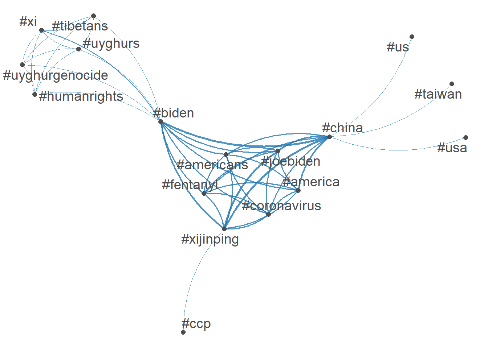
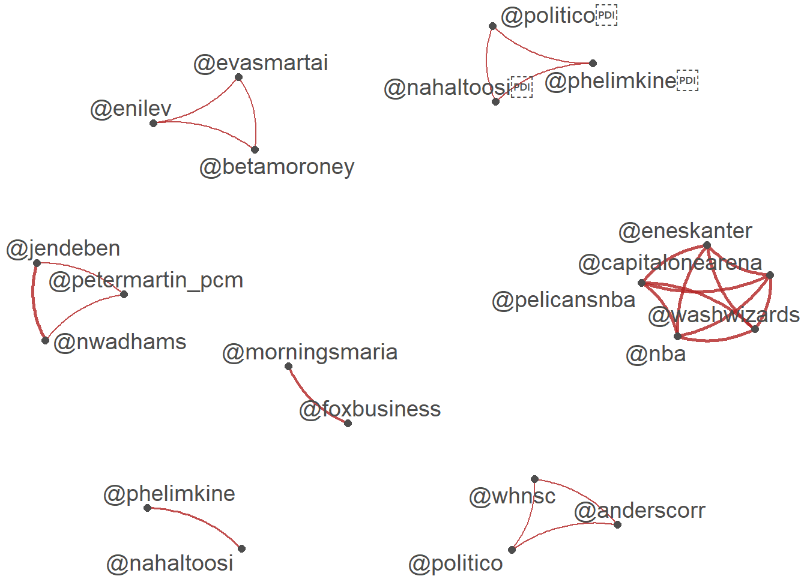
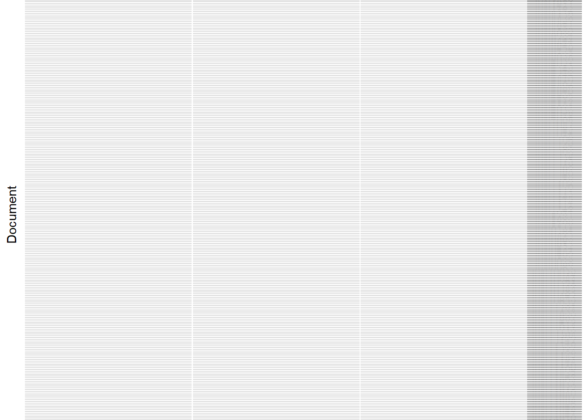

library(quanteda)Warning in .recacheSubclasses(def@className, def, env): undefined subclass
"pcorMatrix" of class "replValueSp"; definition not updatedWarning in .recacheSubclasses(def@className, def, env): undefined subclass
"pcorMatrix" of class "xMatrix"; definition not updatedWarning in .recacheSubclasses(def@className, def, env): undefined subclass
"pcorMatrix" of class "mMatrix"; definition not updatedPackage version: 3.3.1
Unicode version: 15.1
ICU version: 74.1Parallel computing: 16 of 16 threads used.See https://quanteda.io for tutorials and examples.library(quanteda.textmodels)
library(quanteda.textplots)
library(readr)
library(ggplot2)Warning: package 'ggplot2' was built under R version 4.3.2# Twitter data about President Biden and Xi summit in Novemeber 2021
# Do some background search/study on the event
#
summit <- read_csv("https://raw.githubusercontent.com/datageneration/datamethods/master/textanalytics/summit_11162021.csv")Rows: 14520 Columns: 90── Column specification ────────────────────────────────────────────────────────
Delimiter: ","
chr (50): screen_name, text, source, reply_to_screen_name, hashtags, symbol...
dbl (26): user_id, status_id, display_text_width, reply_to_status_id, reply...
lgl (10): is_quote, is_retweet, quote_count, reply_count, ext_media_type, q...
dttm (4): created_at, quoted_created_at, retweet_created_at, account_create...
ℹ Use `spec()` to retrieve the full column specification for this data.
ℹ Specify the column types or set `show_col_types = FALSE` to quiet this message.#View(summit)
sum_twt = summit$text
toks = tokens(sum_twt)
sumtwtdfm <- dfm(toks)
# Latent Semantic Analysis
sum_lsa <- textmodel_lsa(sumtwtdfm)
summary(sum_lsa) Length Class Mode
sk 10 -none- numeric
docs 145200 -none- numeric
features 160930 -none- numeric
matrix_low_rank 233670360 -none- numeric
data 233670360 dgCMatrix S4 tweet_dfm <- tokens(sum_twt, remove_punct = TRUE) %>%
dfm()
head(tweet_dfm)Document-feature matrix of: 6 documents, 16,026 features (99.89% sparse) and 0 docvars.
features
docs breaking news us president biden amp communist china leader xi
text1 1 1 1 1 1 1 1 2 1 1
text2 0 0 0 0 0 0 0 0 0 0
text3 0 0 0 0 1 0 0 0 0 1
text4 0 0 0 1 1 0 0 0 0 1
text5 0 0 0 0 1 0 0 0 0 1
text6 0 0 0 0 1 0 0 0 0 1
[ reached max_nfeat ... 16,016 more features ]tag_dfm <- dfm_select(tweet_dfm, pattern = "#*")
toptag <- names(topfeatures(tag_dfm, 50))
head(toptag, 10) [1] "#china" "#biden" "#xijinping" "#joebiden"
[5] "#america" "#americans" "#coronavirus" "#fentanyl"
[9] "#xi" "#uyghurgenocide"library(quanteda.textplots)
tag_fcm <- fcm(tag_dfm)
head(tag_fcm)Feature co-occurrence matrix of: 6 by 685 features.
features
features #breaking #breakingnews #biden #china #usa #pray4america
#breaking 0 4 4 5 5 0
#breakingnews 0 0 4 5 4 0
#biden 0 0 0 415 44 0
#china 0 0 0 8 76 0
#usa 0 0 0 0 6 0
#pray4america 0 0 0 0 0 0
features
features #joebiden #xijinping #america #americans
#breaking 0 0 0 0
#breakingnews 0 0 0 0
#biden 299 366 301 295
#china 339 433 308 295
#usa 12 14 0 0
#pray4america 0 0 0 0
[ reached max_nfeat ... 675 more features ]topgat_fcm <- fcm_select(tag_fcm, pattern = toptag)
textplot_network(topgat_fcm, min_freq = 50, edge_alpha = 0.8, edge_size = 1)
user_dfm <- dfm_select(tweet_dfm, pattern = "@*")
topuser <- names(topfeatures(user_dfm, 50))
head(topuser, 20) [1] "@potus" "@joebiden" "@politico" "@eneskanter"
[5] "@jendeben" "@nwadhams" "@nba" "@washwizards"
[9] "@pelicansnba" "@capitalonearena" "@kevinliptakcnn" "@foxbusiness"
[13] "@morningsmaria" "@scmpnews" "@uyghur_american" "@nytimes"
[17] "@petermartin_pcm" "@nahaltoosi" "@phelimkine" "@kaylatausche" user_fcm <- fcm(user_dfm)
head(user_fcm, 20)Feature co-occurrence matrix of: 20 by 741 features.
features
features @youtube @bfmtv @cnn @lauhaim @barackobama @joebiden
@youtube 0 0 0 0 0 0
@bfmtv 0 0 1 1 1 1
@cnn 0 0 0 1 1 1
@lauhaim 0 0 0 0 1 1
@barackobama 0 0 0 0 0 1
@joebiden 0 0 0 0 0 3
@kamalaharris 0 0 0 0 0 0
@hillaryclinton 0 0 0 0 0 0
@billclinton 0 0 0 0 0 0
@cbsnews 0 0 0 0 0 0
features
features @kamalaharris @hillaryclinton @billclinton @cbsnews
@youtube 0 0 0 0
@bfmtv 1 1 1 1
@cnn 1 1 1 1
@lauhaim 1 1 1 1
@barackobama 1 1 1 1
@joebiden 1 1 1 1
@kamalaharris 0 1 1 1
@hillaryclinton 0 0 1 1
@billclinton 0 0 0 1
@cbsnews 0 0 0 0
[ reached max_feat ... 10 more features, reached max_nfeat ... 731 more features ]user_fcm <- fcm_select(user_fcm, pattern = topuser)
textplot_network(user_fcm, min_freq = 20, edge_color = "firebrick", edge_alpha = 0.8, edge_size = 1)
# American Presidential speeches
# Example extracted from https://quanteda.io/articles/pkgdown/examples/plotting.html
library(quanteda.textstats)Warning in .recacheSubclasses(def@className, def, env): undefined subclass
"pcorMatrix" of class "replValueSp"; definition not updatedWarning in .recacheSubclasses(def@className, def, env): undefined subclass
"pcorMatrix" of class "xMatrix"; definition not updatedWarning in .recacheSubclasses(def@className, def, env): undefined subclass
"pcorMatrix" of class "mMatrix"; definition not updateddata_corpus_inaugural_subset <-
corpus_subset(data_corpus_inaugural, Year > 1949)
kwic(tokens(data_corpus_inaugural_subset), pattern = "american") %>%
textplot_xray()
textplot_xray(
kwic(data_corpus_inaugural_subset, pattern = "american"),
kwic(data_corpus_inaugural_subset, pattern = "people"),
kwic(data_corpus_inaugural_subset, pattern = "communist")
)Warning: 'kwic.corpus()' is deprecated. Use 'tokens()' first.Warning: 'kwic.corpus()' is deprecated. Use 'tokens()' first.
Warning: 'kwic.corpus()' is deprecated. Use 'tokens()' first.
theme_set(theme_bw())
g <- textplot_xray(
kwic(toks, pattern = "american"),
kwic(toks, pattern = "people"),
kwic(toks, pattern = "communist")
)
g + aes(color = keyword) +
scale_color_manual(values = c("blue", "red", "green")) +
theme(legend.position = "none")
g